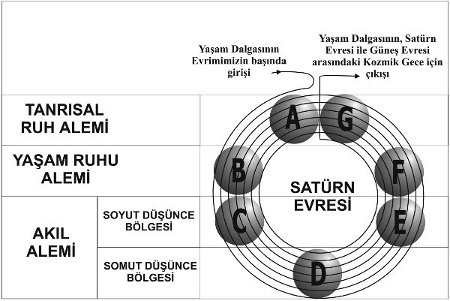

500) Önceki bölümlerde insanın, içinde evriminin devam ettiği beş âlemden üçüyle olan ilişkisinden bahsettik. Bu üç âlemi kısmen anlattık ve bilincin bu âlemlerle ilişkide olmasını sağlayan araçlarını gördük. Ayrıca insanın, maden, bitki ve hayvan krallıklarıyla ilişkisini de inceledik ve insan krallığı ile diğer üç krallık arasında araçların farklılığını ve bunun sonucu olarak da bilinç hallerinin farklılığını inceledik. İnsanı, bir yaşam döngüsü boyunca üç âlemde izledik ve ikiz yasalar Sebep ve sonuç ile Yeniden Doğuş’un, insan evrimi üzerindeki etkilerini inceledik.
501) İnsan gelişiminin daha ilerideki detaylarını öğrenmek için şimdi de onun, Evrenin Yüce Mimarı olan Tanrı ve Göksel Varlıkların Hiyerarşileri’ni incelememiz gerekir. Bu Göksel Varlıklar, Yakup’un Merdiveni’nin çok çeşitli basamaklarında bulunmaktadır ve bu Merdiven, insandan Tanrı ve ötesine kadar uzanmaktadır.
502) Böyle bir inceleme yapmak, son derece zordur ve bu konuyla ilgili eserleri okumuş olan okuyucuların çoğunun zihninde oluşmuş olan belirsiz Tanrı anlayışları ile iş daha da zorlaşmaktadır. İsimlerin kendi içlerinde ve birbirleri için önemli olmadığı doğrudur. Fakat bizim bir isimle neyi kastettiğimizi bilmemiz çok önemlidir. Aksi takdirde yanlış anlama kaçınılmaz olacaktır. Ve yazarlar ve öğretmenler ortak bir terminoloji üzerinde anlaşmazlarsa belirttiğimiz karışıklık daha da içinden çıkılmaz olacaktır. “Tanrı” kelimesi kullanıldığında, bununla Mutlak ve Bir Olan ve Evrenin Yüce Mimarı olan Tanrı’nın mı, bizim Güneş Sisteminin Mimarı’nın mı kastedildiği belli değildir.
503) Tanrılığın “Baba”, “Oğul” ve “Kutsal Rûh” olarak üçe bölünmesi de kafa karıştırıcıdır. Bu isimlerle anılan Varlıklar, insanın sonsuz derecede yukarısında olmalarına ve insanın, Tanrısallığın en yüksek kavrayışıyla yapabileceği bütün yüceltmelere ve tapınımlara lâyık olmalarına karşın Onlar, birbirlerinden farklıdırlar.
504) Şekil 6 ve Şekil 11 belki bu konuyu daha açık ifade edebilir. Âlemler ve Kozmik Planlar’ın uzayda birbirlerinin üzerlerinde bulunmadığı unutulmamalıdır. Aksine yedi Kozmik Plan, birbirlerine ve yedi âleme nüfuz etmiş bir halde bulunmaktadırlar. Onlar rûh-maddesi’nin, birbirlerine nüfuz etmiş olan halleridirler. Böylece Tanrı ve belirttiğimiz diğer yüce Varlıklar, uzayda birbirlerinden ayrı değildirler. Onlar, kendi âlemlerinin her kısmını ve kendilerinden daha yoğun âlemleri kaplamışlardır. Ve onların tümü, dünyâmızda da bulunmaktadırlar ve bize “ellerimizden ve ayaklarımızdan daha yakın”dırlar. Şu apaçık bir hakikattir: “O’nda yaşarız, hareket ederiz ve O’nda varoluruz”. Çünkü hiçbirimiz, dünyâmızı kaplayan ve ayakta tutan bu yüce Varlıkların (Intelligence) dışında varolamayız. Eter Bölge’nin, yoğun Dünyamızın atmosferinin dışına dek uzandığını; Arzu Âlemi’nin uzayda Eter Bölge’nin ötesine dek ulaştığını ve Düşünce Âleminin de bu iki âlemin ötesine, uzayda gezegenler arasındaki boşluğa dek uzandığını söylemiştik. Elbette ki daha ince maddeden oluşan âlemler uzayda, kendilerinden daha yoğun âlemlerden daha fazla yer kaplarlar, çünkü daha yoğun âlemler, kristalleşmiş ve yoğunlaşmışlardır ve bu yüzden de daha az yer işgal ederler.
505) Aynı ilke Kozmik Planlar için de geçerlidir. Onları yukarıdan aşağıya doğru birden itibaren numarandırırsak, hepsinin içerisinde en yoğun olanı yedincidir. Ancak biz şekilde yedinci planı diğerlerinden daha büyük gösterdik, çünkü bu plan bizim en yakından ilişkili olduğumuz plandır ve onun herbir alt-bölümü şekilde tek tek gösterilmek istenmiştir. Fakat gerçekte bu plan, uzayda diğer Kozmik Planlardan daha az yer kaplar. Ancak hatırlanmalı ve dikkate alınmalıdır ki, boyutsal olarak tüm planların en küçüğü olmasına karşın bu plan bile, yine de tahmin edilemeyecek ölçüde büyüktür ve büyüklüğü, insan zihninin kavrayabileceğinin çok ötesindedir. O, bizimkine benzeyen milyonlarca Güneş Sistemi’ni kaplar. Bu Güneş Sistemleri bizim evrim seviyemize yakın birçok farklı derecedeki varlıkların evrim alanlarıdır.
506) Bizim planımızdan yukarıda bulunan altı Kozmik Plan’la ilgili olarak hiçbir şey bilmiyoruz. Bize sadece bu Kozmik Planların, tarif edilemez ihtişama sahip Varlıkların büyük Hiyerarşilerinin faaliyet alanları olduğu söylenmiştir.
507) Kendi Fizik Âlemimizden, içteki ve ince âlemlere Kozmik Planlardan geçerek ilerlersek görürüz ki bizim Güneş Sistemimizin Mimarı ve bizim varoluşumuzun kaynağı ve amacı olan Tanrı, yedinci Kozmik Planın en yüksek bölümünde bulunmaktadır. Bu, O’nun âlemidir.
508) O’nun âlemi, bizim güneş sistemimize ait olan diğer gezegenlerde (Uranüs, Satürn, Jüpiter, Mars, Dünyâ, Venüs, Merkür) ve onların uydularında devam eden evrim sistemlerini içermektedir.
509) Gezegensel Rûhlar olarak belirttiğimiz Büyük Ruhsal Zekâlar bizim evrimimizi yönetirler ve “Tahtın önündeki Yedi Rûh” olarak adlandırılırlar. Ve de Tanrı’nın Elçileri’dirler. Onlardan herbiri, bizim Güneş Sistemimiz olan Tanrı’nın Krallığı’nda belli bir bölümden sorumludurlar. Güneş ise evrenimizdeki en yüce varlıkların evrim alanıdır. Ancak en yüce varlıklar, güneşin korkunç titreşimlerine dayanabilirler ve o titreşimler aracılığıyla gelişebilirler. Güneş, doğada Tanrı’nın simgesi olarak gördüğümüz şeylerden Tanrı’ya en yakın olanıdır. Ancak güneş sadece bir örtüdür ve örtünün altında bulunanı saklar. Örtünün altında bulunan ise burada açıkça söylenemez.
510) Bizim Güneş Sistemimizin Mimarının kaynağını keşfetmeye çalıştığımızda yedi Kozmik Plan’dan en yüksekte olanına gitmemiz gerekir. En yüksekteki Kozmik Plan, Mutlak’tan (ZÂT) çıkmış olan En Yüce Varlığın (ALLAH) âlemidir.
511) Mutlak, her türlü anlayışın ötesindedir. Anlayabileceğimiz hiçbir tanım, hiçbir benzetme onunla ilgili herhangi bir fikri bize iletemez. Açıklama, daima sınırlama da içerir. Bu yüzden Mutlak’ı en iyi, ‘Sınırsız Varlık’ ve ‘Varoluşun Kökü’ olarak niteleyebiliriz.

Şekil 7
512) Varoluşun Kökü’nden yâni Mutlak’tan, tezâhür’ün (manifestasyon) başlangıcında ilk olarak Yüce Varlık açığa çıkar. O, BİR’dir.
513) Yuhanna İncili’nin birinci bölümünde bu Büyük Varlık, Tanrı olarak adlandırılmıştır. Bu En Yüce Varlık’tan “onsuz hiçbir şeyin yaratılmadığı”, yaratıcı emir olan Kelime, “Olsun!” çıkar. Bu Kelime, daha hiçbir âlem yaratılmadan babası En Yüce Varlık tarafından doğurulmuş olan tek Oğul’dur. Ancak O, kesinlikle Mesih (Christ) değildir. Mesih ne kadar yüce ve ihtişamlı olsa da ve sâf insan doğasının ne kadar yükseğinde olsa da bu Yüce Varlık, İsa değildir. Gerçekten de “Söz, et oldu”; ancak bahsedilen et, bir bedenin eti gibi sınırlı bir anlamda değil, bu güneş sistemindeki ve diğer milyonlarca güneş sistemlerindeki her şeyin eti anlamındadır.
514) En Yüce Varlığın birinci görünümü GÜÇ olarak nitelendirilebilir. Bu görünümden ikinci görünüm olan KELİME çıkar. Ve bu iki görünümden de üçüncü görünüm olan HAREKET meydana gelir.
515) Üçüz olan bu En Yüce Varlık’tan yedi Büyük Kelime çıkar. Bunlar Kendilerinde, çeşitli Kozmik Planlara dağıldıkça hep daha fazla farklılaşan bütün büyük Hiyerarşileri içerirler (Bakınız Şekil 6) . İkinci Kozmik Planda 49 Hiyerarşi; üçüncü Kozmik Planda ise 343 Hiyerarşi bulunmaktadır. Bunların herbiri de yedi bölüme ve alt-bölüme ayrılabilirler. Böylece Güneş Sisteminin tezâhür ettiği en alt Kozmik Plan’da bölüm ve alt-bölümlerin sayısı neredeyse sonsuzdur.
516) Yedinci Kozmik Planın en yüksek âleminde bizim Güneş Sistemimizin Tanrı’sı ve tüm diğer Güneş Sistemlerinin Tanrıları oturmaktadır. Bu Yüce Varlıklar da, En Yüce Varlık gibi üçüz olarak görünürler (tezâhür ederler). Bunların üç görünümleri, İrâde, Bilgelik ve Faaliyet’tir.
517) Tanrı’dan çıkmış olan ve kendilerine yedi gezegenden birindeki yaşam evriminin sorumluluğu verilmiş olan yedi Gezegensel Rûhtan herbiri de aynı şekilde üçüzdürler ve kendi içlerinde Yaratıcı Hiyerarşilere ayrılırlar. Bu Yaratıcı Hiyerarşiler yedili bir evrimden geçmektedirler. Gezegensel Rûhların herbiri tarafından yürütülen gelişim, diğer Gezegensel Rûhların kullandığı gelişim yöntemlerinden farklıdır.
518) Evrimlerinde en erken evrelerde en gelişmiş varlıklar yavaş yavaş Gezegensel Rûhun asıl görevini üzerlerine almakta ve evrimi onlar devam ettirmektedirler. Böylelikle de Gezegensel Rûh, bu işteki aktif katılımından çekilmekte ve sadece vekillerini yönetmektedir. Bu, en azından bizim ait olduğumuz gezegenler sisteminde geçerlidir.
519) Yukarıda bahsedilen öğreti, tüm Güneş Sistemleriyle ilgili öğretidir. Aşağıda da bizim ait olduğumuz Güneş Sistemi’ne inip, onunla ilgili öğretiyi vereceğiz. Deneyimli bir durugörür, doğanın hafızasını araştırarak bu öğretiyi kendisi de bulabilir.